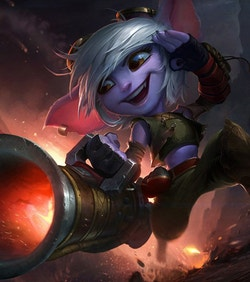

Here are some champions from each role to get you started!
Bottom Lane
Vayne: The Night Hunter

Passive: Night Hunter | Vayne ruthlessly hunts evil-doers, gaining 30 Move Speed when moving toward nearby enemy champions.
Q: Tumble | Vayne tumbles, maneuvering to carefully place her next shot. Her next attack deals bonus damage.
W: Silver Bolts | Vayne tips her bolts with a rare metal, toxic to evil things. The third consecutive attack or ability against the same target deals a percentage of the target's max health as bonus true damage.
E: Condemn | Vayne draws a heavy crossbow from her back, and fires a huge bolt at her target, knocking them back and dealing damage. If they collide with terrain, they are impaled, dealing bonus damage and stunning them.
R: Final Hour | Readying herself for an epic confrontation, Vayne gains increased Attack Damage, Invisibility during Tumble, reduced Tumble cooldown, and more bonus Move Speed from Night Hunter
Tristana: The Yordle Gunner
Passive: Draw a Bead | Increases Tristana's Attack Range as she levels.
Q: Rapid Fire | Tristana fires her weapon rapidly, increasing her Attack Speed for a short time.
W: Rocket Jump | Tristana fires at the ground to propel her to a distant location, dealing damage and slowing surrounding units for a brief period where she lands.
E: Explosive Charge | When Tristana kills a unit, her cannonballs burst into shrapnel, dealing damage to surrounding enemies. Can be activated to place a bomb on a target enemy that explodes after a short duration dealing damage to surrounding units.
R: Buster Shot | Tristana loads a massive cannonball into her weapon and fires it at an enemy unit. This deals Magic Damage and knocks the target back. If the target is carrying the Explosive Charge bomb, the bomb detonation radius is doubled.
Ashe: The Frost Archer

Passive: Frost Shot | Ashe's attacks slow their target, causing her to deal increased damage to these targets. Ashe's critical strikes deal no bonus damage but apply an empowered slow to the target.
Q: Ranger's Focus | Ashe builds up Focus by attacking. At maximum Focus, Ashe can cast Ranger's Focus to consume all stacks of Focus, temporarily increasing her Attack Speed and transforming her basic attack into a powerful flurry attack for the duration.
W: Volley | Ashe fires arrows in a cone for increased damage. Also applies Frost Shot.
E: Hawkshot | Ashe sends her Hawk Spirit on a scouting mission anywhere on the map.
R: Enchanted Crystal Arrow | Ashe fires a missile of ice in a straight line. If the arrow collides with an enemy Champion, it deals damage and stuns the Champion, stunning for longer the farther arrow has traveled. In addition, surrounding enemy units take damage and are slowed.
Mid Lane
Akali: The Rogue Assassin

Passive: Assassin's Mark | Dealing spell damage to a champion creates a ring of energy around them. Exiting that ring empowers Akali's next autoattack with bonus range and damage.
Q: Five Point Strike | Akali throws out five kunai, dealing damage based on her bonus Attack Damage and Ability Power and slowing.
W: Twilight Shroud | Akali drops a cover of smoke and briefly gains Move Speed. While inside the shroud, Akali becomes invisible and unable to be selected by enemy spells and attacks. Attacking or using abilities will briefly reveal her.
E: Shuriken Flip | Flip backward and fire a shuriken forward, dealing magic damage. The first enemy or smoke cloud hit is marked. Re-cast to dash to the marked target, dealing additional damage.
R: Perfect Execution | Akali leaps in a direction, damaging enemies she strikes. Re-cast: Akali dashes in a direction, executing all enemies she strikes.
Malzahar: The Profit of The Void

Passive: Void Shift | When he hasn't recently taken damage or been crowd controlled, Malzahar gains massive damage reduction and crowd control immunity, lingering for a short period after taking damage.
Q: Call of The Void | Malzahar opens up two portals to the Void. After a short delay, they fire projectiles that deal Magic Damage and silence enemy champions.
W: Void Swarm | Malzahar summons Voidlings to attack nearby enemies.
E: Malefic Visions | Malzahar infects his target's mind with cruel visions of their demise, dealing damage over time. Using Malzahar's other spells on the target will refresh the visions. If the target dies while afflicted by the visions, they pass on to a nearby enemy unit and Malzahar gains Mana. Malzahar's Voidlings are attracted to affected units.
R: Nether Grasp | Malzahar channels the essence of the Void to suppress an enemy champion over a zone of damaging negative energy.
Ahri: The Nine-Tailed Fox

Passive: Essence Theft | When Ahri strikes 9 enemies with her abilities, her next ability also heals her for each enemy hit.
Q: Orb of Deception | Ahri sends out and pulls back her orb, dealing magic damage on the way out and true damage on the way back.
W: Fox-Fire | Ahri gains a brief burst of Move Speed and releases three fox-fires, that lock onto and attack nearby enemies.
E: Charm | Ahri blows a kiss that damages and charms an enemy it encounters, instantly stopping movement abilities and causing them to walk harmlessly towards her.
R: Spirit Rush | Ahri dashes forward and fires essence bolts, damaging nearby enemies. Spirit Rush can be cast up to three times before going on cooldown, and gains additional recasts when taking down enemy champions.
Top Lane
Singed: The Mad Chemist

Passive: Noxious Slipstream | Singed drafts off nearby champions, gaining a burst of Move Speed when passing them.
Q: Poison Trail | Leaves a trail of poison behind Singed, dealing damage to enemies caught in the path.
W: Mega Adhesive | Throws a vial of mega adhesive on the ground, slowing and grounding enemies who walk on it.
E: Fling | Damages target enemy unit and flings them into the air behind Singed. If the target Singed flings lands in his Mega Adhesive, they are also rooted.
R: Insanity Potion | Singed drinks a potent brew of chemicals, granting him increased combat stats, and making his Poison Trail apply Grievous Wounds.
Irelia: The Blade Dancer

Passive: Ionian Fervor | When Irelia strikes enemies with spells she gains stacking bonus Attack Speed. At maximum stacks she also gains bonus damage on hit.
Q: Bladesurge | Irelia dashes forward to strike her target, healing herself. If the target is Marked or dies to Bladesurge, its cooldown refreshes.
W: Defiant Dance | Irelia charges a strike that deals more damage as she charges. She takes reduced physical damage during the charge.
E: Flawless Duet | Irelia sends out two blades which converge on each other. Enemies caught in between are damaged, stunned and Marked.
R: Vanguard's Edge | Irelia fires a massive number of blades that explode outward upon hitting an enemy champion. Enemies hit by the blades are damaged and Marked. Afterwards the blades form a wall that will damage and slow enemies that walk through it.
Riven: The Exile

Passive: Runic Blade | Riven's abilities charge her blade, and her basic attacks expend charges to deal an additional damage.
Q: Broken Wings | Riven lashes out in a series of strikes. This ability can be reactivated three times in a short time frame with the third hit knocking back nearby enemies.
W: Ki Burst | Riven emits a Ki Burst, damaging and stunning nearby enemies.
E: Valor | Riven steps forward a short distance and blocks incoming damage.
R: Blade of The Exile | Riven empowers her keepsake weapon with energy, and gains Attack Damage and Range. During this time, she also gains the ability to use Wind Slash, a powerful ranged attack, once.
Support
Soraka: The Starchild

Passive: Salvation | Soraka runs faster towards nearby low health allies.
Q: Starcall | A star falls from the sky at the target location dealing magic damage and slowing enemies. If an enemy champion is hit by Starcall, Soraka recovers Health.
W: Astral Infusion | Soraka sacrifices a portion of her own health to heal another friendly champion.
E: Equinox | Creates a zone at a location that silences all enemies inside. When the zone expires, all enemies still inside are rooted.
R: Wish | Soraka fills her allies with hope, instantly restoring health to herself and all friendly champions.
Pyke: The Bloodharbor Ripper

Passive: Gift of The Drowned Ones | When Pyke is hidden from enemies, he regenerates damage that he has recently taken from champions. Pyke also cannot gain extra Maximum Health from any source, and instead gains Bonus AD.
Q: Bone Skewer | Pyke either stabs an enemy in front of him or pulls an enemy towards him.
W: Ghostwater Dive | Pyke enters Camouflage and gains significant Move Speed that decays over time.
E: Phantom Undertow | Pyke dashes and leaves behind a phantom that will return to him, stunning enemy champions along its path.
R: Death From Below | Pyke blinks to and executes low health enemies, allowing him to cast this spell again and granting additional gold to an ally who assists.
Karma: The Enlightened One

Passive: Gathering Fire | After using 5 spells or attacks, Karma's next ability will be enhanced.
Q: Inner Flame | Karma sends forth a ball of spirit energy that explodes and deals damage upon hitting an enemy unit. Mantra Bonus: In addition to the explosion, Mantra increases the destructive power of her Inner Flame, creating a cataclysm which deals damage after a short delay.
W: Focused Resolve | Karma creates a tether between herself and a targeted enemy, dealing damage and revealing them. If the tether is not broken, the enemy will be rooted and damaged again. Mantra Bonus: Karma strengthens the link, healing herself and extending the root duration.
E: Inspire | Karma summons a protective shield that absorbs incoming damage and increases the Move Speed of the protected ally. Mantra Bonus: Energy radiates out from her target, strengthening the initial shield and applying Inspire to nearby allied champions.
R: Mantra | Karma empowers her next ability to do an additional effect. Mantra is available at level 1 and does not require a skill point.
Jungle
Amumu: The Sad Mummy

Passive: Cursed Touch | Amumu's basic attacks Curse his enemies, causing them to take bonus true damage from incoming magic damage.
Q: Bandage Toss | Amumu tosses a sticky bandage at a target, stunning and damaging the target while he pulls himself to them.
W: Despair | Overcome by anguish, nearby enemies lose a percentage of their maximum Health each second and have their Curses refreshed.
E: Tantrum | Permanently reduces the physical damage Amumu would take. Amumu can unleash his rage, dealing damage to surrounding enemies. Each time Amumu is hit, the cooldown on Tantrum is reduced by 0.5 seconds.
R: Curse of The Sad Mummy | Amumu entangles surrounding enemy units in bandages, applying his Curse, damaging and stunning them.
Kayn: The Shadow Reaper

Passive: The Darkin Scythe | Kayn wields an ancient weapon and fights Rhaast, the darkin within it, for control. Either the Darkin will triumph, or Kayn will master Rhaast and become the Shadow Assassin. Darkin: Heal for a percentage of spell damage dealt to champions. Shadow Assassin: For the first few seconds in combat with enemy champions, deal bonus damage.
Q: Reaping Slash | Kayn dashes, then slashes. Both deal damage.
W: Blade's Reach | Kayn damages and slows targets in a line.
E: Shadow Step | Kayn can walk through terrain.
R: Umbral Trespass | Kayn hides in an enemy's body, dealing massive damage when he bursts out.
Vi: The Piltover Enforcer

Passive: Blast Shield | Vi charges a shield over time. The shield can be activated by hitting an enemy with an ability.
Q: Vault Breaker | Vi charges her gauntlets and unleashes a vault shattering punch, carrying her forward. Enemies she hits are knocked back and receive a stack of Denting Blows.
W: Denting Blows | Vi's punches break her opponent's Armor, dealing bonus damage and granting her Attack Speed.
E: Relentless Force | Vi's next attack blasts through her target, dealing damage to enemies behind it.
R: Cease and Desist | Vi runs down an enemy, knocking aside anyone in the way. When she reaches her target she knocks it into the air, jumps after it, and slams it back into the ground.